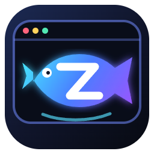

在线视频
打开抖音和常用网页，桌面视口按框体等比例适配，保留滚轮与点击。

Zier摸鱼盒子抖音网页、本地视频与 TXT / EPUB 小说，都装进一枚可缩放、可置顶、带老板键的桌面小窗。广告伪装开启后仍能正常浏览与操作。
视频、阅读和伪装各自独立，窗口缩小后仍保留完整交互。
打开抖音和常用网页，桌面视口按框体等比例适配，保留滚轮与点击。
支持 TXT 与 EPUB，五档平滑速度、字体调节、阅读位置自动保存。
隐藏地址栏并切换办公推广外观，伪装状态下仍可继续播放和浏览。
支持置顶、托盘、日夜模式和老板键，最小可缩至 320×220。
下载完整文件夹，解压后双击“Zier摸鱼盒子.exe”。